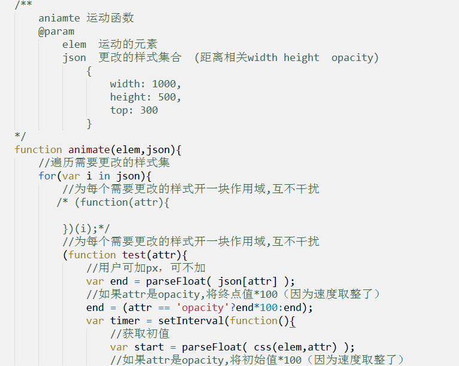

js-运动（上）
作者： 千锋李文浩
时间： 17/02/11
页面加载优化（如何提高页面的加载速度）（重）
1、把页面的小图标合成在一张图上面（雪碧图 、 精灵图）
2、把js写在body的最下方（尽量不要放在head里面）
加载js时，会阻断其他资源的加载
运动原理（重）
1、电影是怎么呈现的？
2、怎么让元素某个样式慢慢的变化？
运动原理：使用定时器不断地改变元素的一个或多个样式。
原理实战
1、更改元素的宽度
2、更改元素的位置
运动说明：
边界处理（重）
1、样式值不断地变化，越过了终点值怎么办？（比如让元素的宽度从0变化到500px，当大于500时怎么办？）
边界处理注意事项：
1、不可以使用 == 进行边界判断（比如宽度每次变化6px，500/6不能得到整数，意味着宽度永远不可能是500）
加速运动&减速运动（重）
1、加速运动
加速原理：让速度不断地变大
2、减速运动
减速原理：速度不断地减小
抛物线运动（重）
抛物线公式：y = a*x*x + b*x + c;
抛物线运动原理：
根据x坐标不断地计算y坐标的值
假设a = -0.001
y = -0.001*x*x + b*x;
重点：求出a、b、c的值
透明度变换（重）
原理：不断地更改元素的透明度opacity
实战
1、图片的淡入淡出
缓冲运动实现（重）
1、什么是缓冲运动？
变化由快到慢的运动
2、缓冲原理
核心：求不同时刻的速度 公式：(end-start)/8
注意：需要对速度做处理
//对速度进行处理 0< 速度 < 1 => 1 -1 < 速度< 0 = -1
speed = speed > 0 ? Math.ceil(speed) : Math.floor(speed);
多属性缓冲运动封装（重）


解构赋值（重）
1、什么是解构赋值？
解构赋值可将数组的元素或对象的属性赋予给另一个变量，该变量的定义语法与数组字面量或对象字面量很相似。
2、解构数组
现有数组: var arr = [13,22,34];
如果我们希望用3个变量得到数组中对应的值，我们会这么写：
var first = arr[0],
second = arr[1],
third = arr[2];
解构赋值：
var [first,second,third] = arr; //first=13 second = 22 third = 34
实际场景剖析：
<input type="text" class="username">
<input type="text" class="phone">
如果我们想用变量得到username和phone
我们可以这么写：
<script>
var [uname,phone] = document.querySelectorAll('input');
</script>
3、解构对象（先了解）
var classRoom = {
id: '1609',
personNum: 34
};
var {id,personNum} = classRoom; // id=1609 personNum=34
预习
1、购物车抛物线飞入
2、链式运动
3、轮播图原理
4、无缝滚动原理